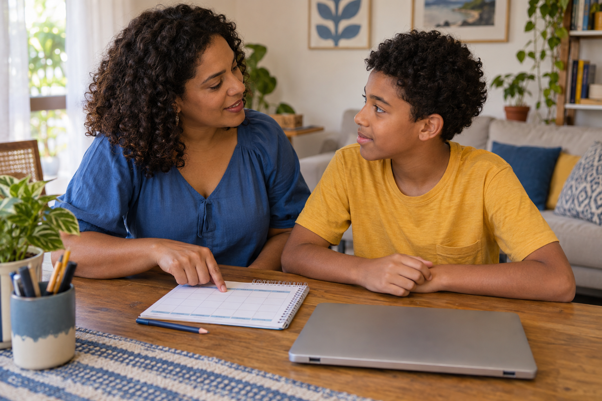
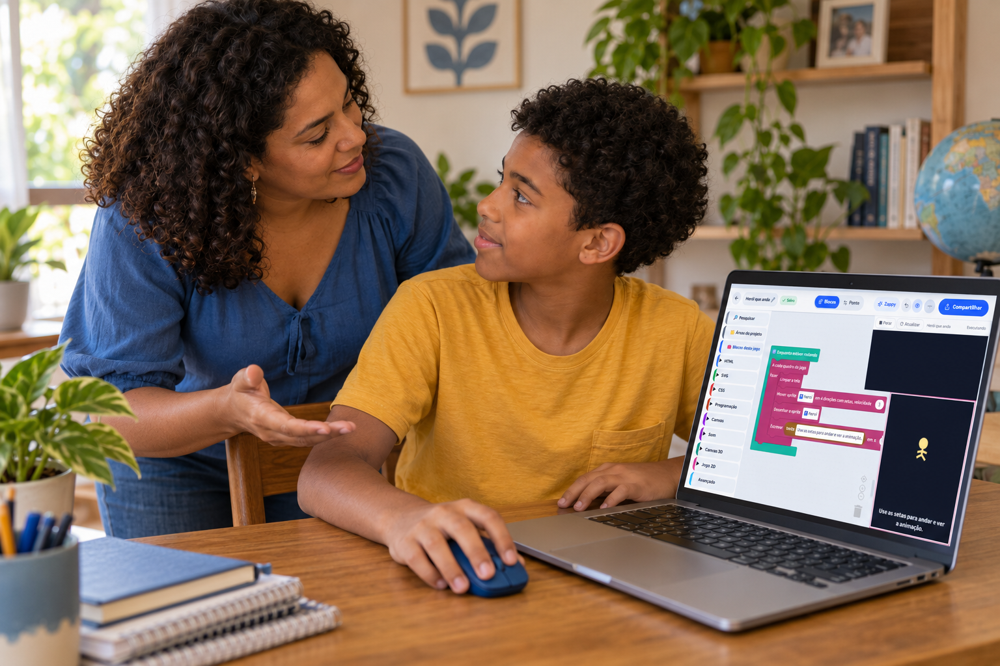
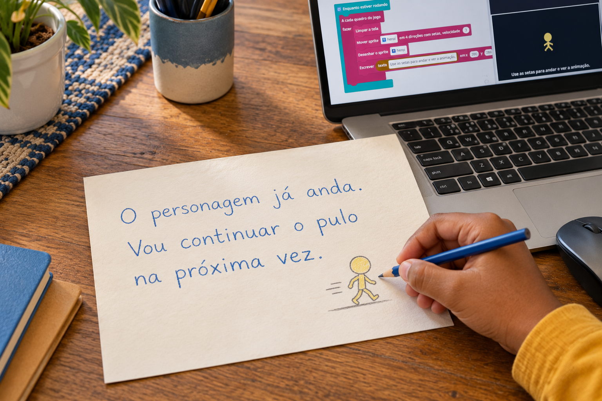
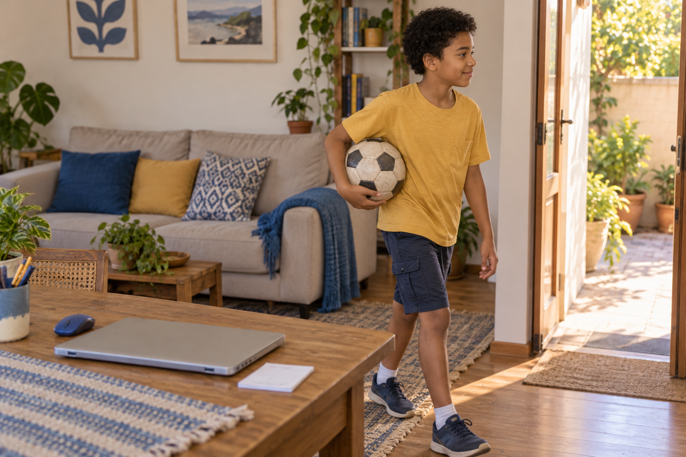
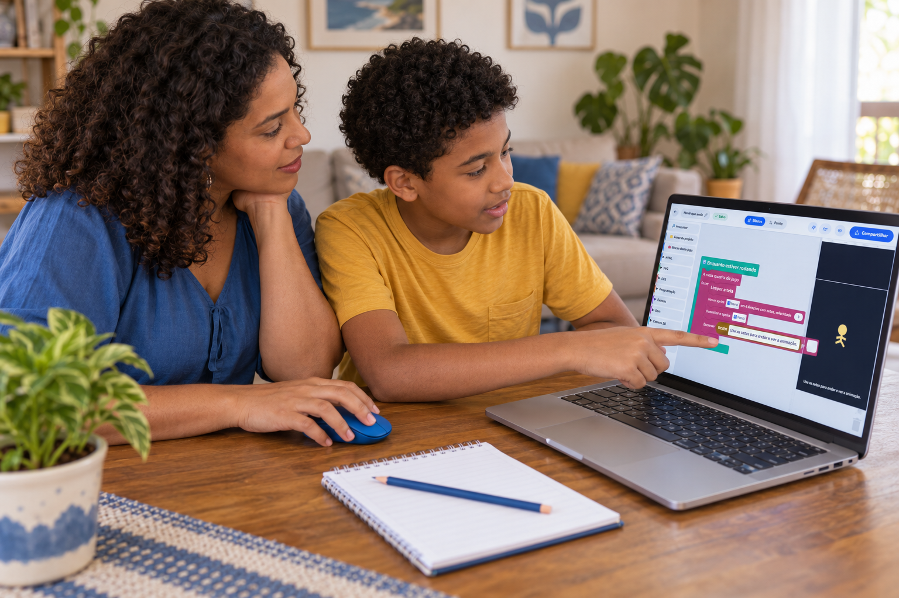

Teste em casa
O combinado para parar fica mais claro quando vem antes de ligar a tela.
Criar jogos também entra nessa conversa.

O combinado para parar fica mais claro quando vem antes de ligar a tela.
Criar jogos também entra nessa conversa.

Escolham os dias e o horário que cabem na rotina.
Incluam o uso do computador, principalmente se outras pessoas também precisam dele.
Combinem como avisar que o tempo está terminando.

O aviso ajuda a criança a se preparar para encerrar a parte em que está.
Na criação de um jogo, parar inclui conferir o salvamento.
Na atividade do Estúdio, esperem aparecer ‘Guardado na sua conta’, no cabeçalho, antes de fechar.
Depois, ela pode anotar o próximo passo.

Por exemplo: ‘O personagem já anda. Vou continuar o pulo na próxima vez.’
O projeto pode continuar em outro momento.

Criar na tela faz parte de uma rotina que também tem descanso, escola, movimento e outras brincadeiras.
Aqui falamos de criação de jogos e de como acompanhar esse aprendizado em casa.

Siga o perfil para ver mais ideias.